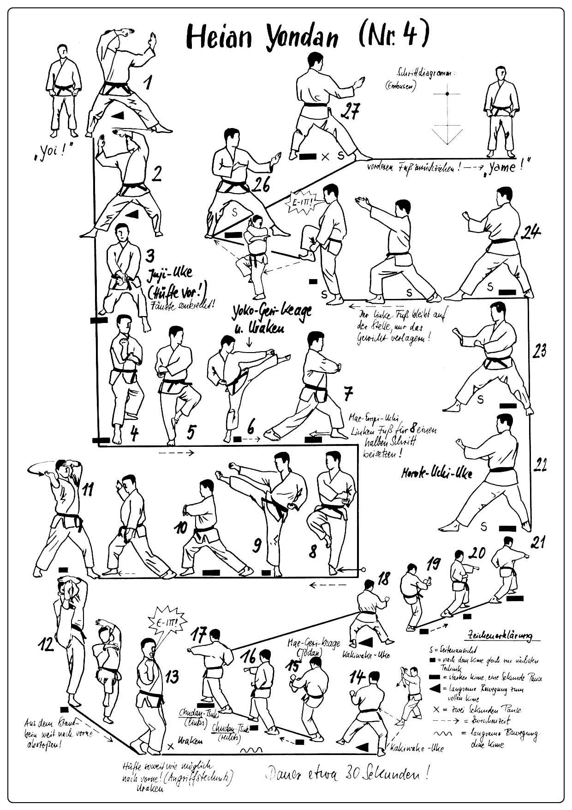

Heian Yondan

- Yoi (divaricando la gamba destra).
- Sposto la gamba sinistra verso sinistra e scendo in Kokutzu Dachi sinistro, paro portando le mani aperte al fianco destro in modo che restino a 90°.
- Tenendo le mani aperte eseguo contemporaneamente Uchi Uke sinistro e Age Uke destro.
- Ruotando i piedi vado in Kokutzu Dachi destro, paro portando le mani aperte al fianco sinistro.
- Tenendo le mani aperte eseguo insieme Uchi Uke destro e Age Uke sinistro.
- Sposto la gamba sinistra verso sinistra e ruoto di 90°, richiamo entrambe i pugni al fianco destro (pugno destro sopra) ed eseguo parata bassa incrociando i polsi (Juji Uke Gedan).
- Avanzo in Kokutzu Dachi ed eseguo Morote Uke destro.
- Eseguo Yoko Geri sinistro e Uraken Uchi sinistro, caricandolo al fianco destro eseguo una parata con il dorso della mano (Haishu Uke) sinistra e colpisco con un colpo di gomito circolare (Mawashi Empi Uchi) destro ad altezza spalla.
- Eseguo Yoko Geri destro e Uraken Uchi destro, caricandolo al fianco sinistro eseguo Haishu Uke destro e colpisco con Mawashi Empi Uchi sinistro ad altezza spalla.
- Ruoto il busto di 90° verso sinistra ed eseguo Gedan Barai sinistro e Age Uke destro entrambe a mano aperta.
- Ruoto le anche portandomi in linea con il busto ed trasformo il Gedan Barai sinistro in Age Uke e l’Age Uke destro in Shuto Uchi con traiettoria circolare e palmo verso l’alto.
- Eseguo Mae Geri, contemporaneamente: porto avanti il braccio sinistro e carico il braccio destro sopra la testa mentre scendo in posizione raccolta con le caviglie incrociate (Kosa Dachi) eseguo una percossa dall’alto verso il basso ad altezza Chudan col dorso della mano (Otoshi Uraken Uchi) ed eseguo il Kiai.
- Di schiena spostando la gamba sinistra mi porto in Kokutzu Dachi a 45° verso sinistra e unendo gli avambracci frontalmente e perpendicolari al suolo eseguo una doppia parata
- Allargando gli avambracci a formare una "V" con i gomiti aderenti al busto (Kakiwake Uke).
- Eseguo Mae Geri destro, e doppio pugno alternato (Ren Tzuki).
- Di schiena spostando la gamba destra ruoto di 90° verso destra ed eseguo Kakiwake Uke
- Eseguo Mae Geri sinistro, Ren Tzuki.
- Sposto la gamba sinistra di 45° verso sinistra vado in Kokutzu Dachi ed eseguo Morote Uke sinistro.
- Avanzo due volte in Kokutzu Dachi eseguendo Morote Uke.
- Passo da Kokutzu Dachi a Zenkutsu Dachi e "afferro" con entrambe le mani e proietto sul ginocchio destro a pugni chiusi (Hittsui Geri). Kiai.
- Richiamo la gamba destra, e scendendo eseguo un cambio di direzione di 180°, vado in Kokutzu Dachi ed eseguo Shuto Uke sinistro.
- Avanzo in Kokutzu Dachi ed eseguo Shuto Uke destro.
- Yame! Arretro richiamando la gamba destra e torno in posizione di Yoi!